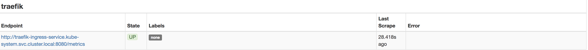
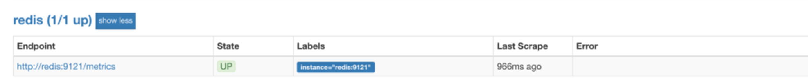
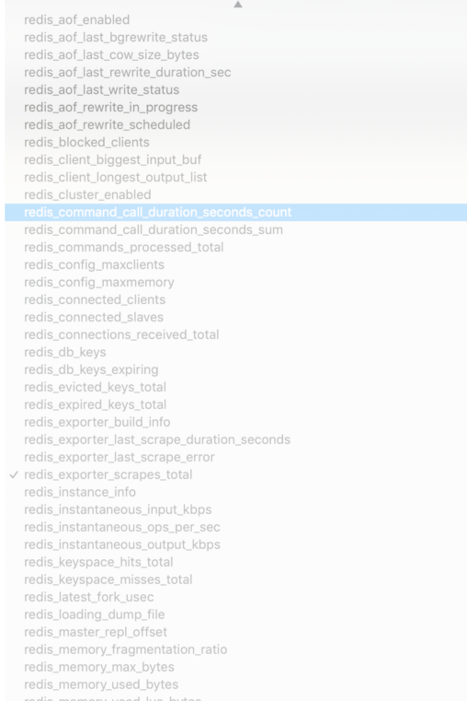
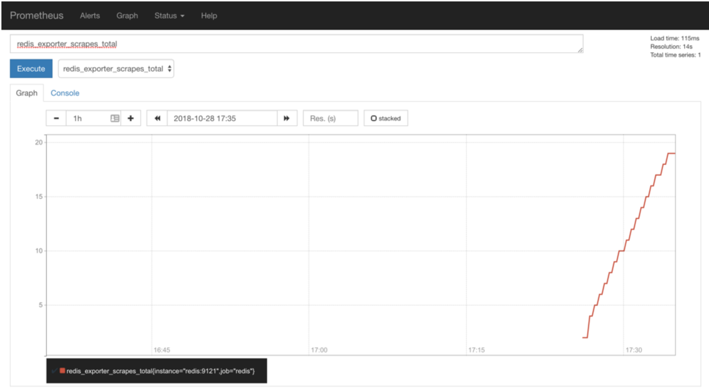

第五节 应用监控（Metrics/Exporter的配置）
Prometheus 的数据指标是通过一个公开的 HTTP(S) 数据接口获取到的，我们不需要单独安装监控的 agent，只需要暴露一个 metrics 接口，Prometheus 就会定期去拉取数据；
对于一些普通的 HTTP 服务，我们完全可以直接重用这个服务，添加一个/metrics接口暴露给 Prometheus；而且获取到的指标数据格式是非常易懂的，不需要太高的学习成本。
现在很多服务从一开始就内置了一个/metrics接口，比如 Kubernetes 的各个组件、istio 服务网格都直接提供了数据指标接口。
有一些服务即使没有原生集成该接口，也完全可以使用一些 exporter 来获取到指标数据，比如 mysqld_exporter、node_exporter，这些 exporter 就有点类似于传统监控服务中的 agent，作为一直服务存在，用来收集目标服务的指标数据然后直接暴露给 Prometheus。
1 普通应用监控
我们采用的是Traefik 作为我们的 ingress-controller，是我们 Kubernetes 集群内部服务和外部用户之间的桥梁。Traefik 本身内置了一个/metrics的接口，但是需要我们在参数中配置开启:
[metrics]
[metrics.prometheus]
entryPoint = "traefik"
buckets = [0.1, 0.3, 1.2, 5.0]
1-1 traefik.toml
defaultEntryPoints = ["http", "https"]
[entryPoints]
[entryPoints.http]
address = ":80"
[entryPoints.http.redirect]
entryPoint = "https"
[entryPoints.https]
address = ":443"
[entryPoints.https.tls]
[[entryPoints.https.tls.certificates]]
CertFile = "/ssl/tls.crt"
KeyFile = "/ssl/tls.key"
[metrics]
[metrics.prometheus]
entryPoint = "traefik"
buckets = [0.1, 0.3, 1.2, 5.0]
我们需要在traefik.toml的配置文件中添加上上面的配置信息，然后更新 ConfigMap 和 Pod 资源对象即可，
$ kubectl delete configmap traefik-conf -n kube-system
configmap "traefik-conf" deleted
$ kubectl create configmap traefik-conf --from-file=traefik.toml -n kube-system
configmap "traefik-conf" created
$ kubectl apply -f traefik.yaml
--from-file=traefik.toml
Traefik Pod 运行后，我们可以看到我们的服务 IP
$ kubectl get svc -n kube-system
NAME TYPE CLUSTER-IP EXTERNAL-IP PORT(S) AGE
traefik-ingress-service NodePort 10.254.141.152 <none> 80:32221/TCP,8080:32440/TCP 1m
$ kubectl get pods -n kube-system -l k8s-app=traefik-ingress-lb -o wide
NAME READY STATUS RESTARTS AGE IP NODE
traefik-ingress-controller-7b57f48999-x6rgf 1/1 Running 0 7m 172.17.0.13 192.168.1.170
然后我们可以在192.168.1.170使用curl检查是否开启了 Prometheus 指标数据接口，或者通过 NodePort 访问也可以：
$ curl 10.254.141.152:8080
<a href="/dashboard/">Found</a>.
$ curl 10.254.141.152:8080/metrics
# HELP go_gc_duration_seconds A summary of the GC invocation durations.
# TYPE go_gc_duration_seconds summary
go_gc_duration_seconds{quantile="0"} 5.2278e-05
go_gc_duration_seconds{quantile="0.25"} 0.00019601
go_gc_duration_seconds{quantile="0.5"} 0.001842359
go_gc_duration_seconds{quantile="0.75"} 0.003759024
go_gc_duration_seconds{quantile="1"} 0.013050517
go_gc_duration_seconds_sum 0.045638715
go_gc_duration_seconds_count 13
# HELP go_goroutines Number of goroutines that currently exist.
# TYPE go_goroutines gauge
go_goroutines 68
# HELP go_memstats_alloc_bytes Number of bytes allocated and still in use.
# TYPE go_memstats_alloc_bytes gauge
go_memstats_alloc_bytes 5.160144e+06
# HELP go_memstats_alloc_bytes_total Total number of bytes allocated, even if freed.
# TYPE go_memstats_alloc_bytes_total counter
go_memstats_alloc_bytes_total 3.9738656e+07
# HELP go_memstats_buck_hash_sys_bytes Number of bytes used by the profiling bucket hash table.
# TYPE go_memstats_buck_hash_sys_bytes gauge
go_memstats_buck_hash_sys_bytes 1.464133e+06
...
从这里可以看到 Traefik 的监控数据接口已经开启成功了，然后我们就可以将这个/metrics接口配置到prometheus.yml中去了，直接加到默认的prometheus这个 job 下面：(prometheus-config.yaml)
apiVersion: v1
kind: ConfigMap
metadata:
name: prometheus-config
namespace: kube-ops
data:
prometheus.yml: |
global:
scrape_interval: 30s
scrape_timeout: 30s
scrape_configs:
- job_name: 'prometheus'
static_configs:
- targets: ['localhost:9090']
- job_name: 'traefik'
static_configs:
- targets: ['traefik-ingress-service.kube-system.svc.cluster.local:8080']
...
当然，我们这里只是一个很简单的配置，scrape_configs 下面可以支持很多参数，例如
basic_auth和bearer_token：比如我们提供的/metrics接口需要basic认证的时候，通过传统的用户名/密码或者在请求的header中添加对应的token都可以支持kubernetes_sd_configs或consul_sd_configs：可以用来自动发现一些应用的监控数据
由于我们这里 Traefik 对应的 servicename 是traefik-ingress-service，并且在 kube-system 这个 namespace 下面，所以我们这里的targets的路径配置则需要使用FQDN的形式：traefik-ingress-service.kube-system.svc.cluster.local，当然如果你的 Traefik 和 Prometheus 都部署在同一个命名空间的话，则直接填 servicename:serviceport即可。然后我们重新更新这个 ConfigMap 资源对象：
traefik-ingress-service.kube-system.svc.cluster.local
$ kubectl delete -f prometheus-config.yaml
configmap "prometheus-config" deleted
$ kubectl create -f prometheus-config.yaml
configmap "prometheus-config" created
现在 Prometheus 的配置文件内容已经更改了，隔一会儿被挂载到 Pod 中的 prometheus-deploy.yaml 文件也会更新，由于我们之前的 Prometheus 启动参数中添加了--web.enable-lifecycle参数，所以现在我们只需要执行一个 reload 命令即可让配置生效：
$ kubectl get svc -n kube-ops
NAME TYPE CLUSTER-IP EXTERNAL-IP PORT(S) AGE
rometheus NodePort 10.254.35.188 <none> 9090:30900/TCP 15d
在 node 192.168.1.179上
$ curl -X POST "http://10.254.35.188:9090/-/reload"
Reloading configuration file...
由于 ConfigMap 通过 Volume 的形式挂载到 Pod 中去的热更新需要一定的间隔时间才会生效，所以需要稍微等一小会儿。http://192.168.1.170:30900/targets
reload 这个 url 是一个 POST 请求，所以这里我们通过 service 的 CLUSTER-IP:PORT 就可以访问到这个重载的接口，这个时候我们再去看 Prometheus 的 Dashboard 中查看采集的目标数据：

可以看到我们刚刚添加的traefik这个任务已经出现了，然后同样的我们可以切换到 Graph 下面去，我们可以找到一些 Traefik 的指标数据，至于这些指标数据代表什么意义，一般情况下，我们可以去查看对应的/metrics接口，里面一般情况下都会有对应的注释。
到这里我们就在 Prometheus 上配置了第一个 Kubernetes 应用。
2 使用 exporter 监控应用
上面我们也说过有一些应用可能没有自带/metrics接口供 Prometheus 使用，在这种情况下，我们就需要利用 exporter 服务来为 Prometheus 提供指标数据了。Prometheus 官方为许多应用就提供了对应的 exporter 应用，也有许多第三方的实现，我们可以前往官方网站进行查看：exporters
比如我们这里通过一个redis-exporter的服务来监控 redis 服务，对于这类应用，我们一般会以 sidecar 的形式和主应用部署在同一个 Pod 中，比如我们这里来部署一个 redis 应用，并用 redis-exporter 的方式来采集监控数据供 Prometheus 使用，如下资源清单文件：（prome-redis.yaml）
apiVersion: extensions/v1beta1
kind: Deployment
metadata:
name: redis
namespace: kube-ops
spec:
template:
metadata:
annotations:
prometheus.io/scrape: "true"
prometheus.io/port: "9121"
labels:
app: redis
spec:
containers:
- name: redis
image: redis:4
resources:
requests:
cpu: 100m
memory: 100Mi
ports:
- containerPort: 6379
- name: redis-exporter
image: oliver006/redis_exporter:latest
resources:
requests:
cpu: 100m
memory: 100Mi
ports:
- containerPort: 9121
---
kind: Service
apiVersion: v1
metadata:
name: redis
namespace: kube-ops
spec:
selector:
app: redis
ports:
- name: redis
port: 6379
targetPort: 6379
- name: prom
port: 9121
targetPort: 9121
可以看到上面我们在 redis 这个 Pod 中包含了两个容器，一个就是 redis 本身的主应用，另外一个容器就是 redis_exporter。现在直接创建上面的应用：
$ kubectl create -f prome-redis.yaml
deployment.extensions "redis" created
service "redis" created
创建完成后，我们可以看到 redis 的 Pod 里面包含有两个容器：
$ kubectl get pods -n kube-ops
NAME READY STATUS RESTARTS AGE
prometheus-66cf4c9574-8f9f6 1/1 Running 1 5d
redis-59bf8cdd76-d5hq7 2/2 Running 0 23m
$ kubectl get svc -n kube-ops
NAME TYPE CLUSTER-IP EXTERNAL-IP PORT(S) AGE
prometheus NodePort 10.254.35.188 <none> 9090:30900/TCP 5d
redis ClusterIP 10.254.9.196 <none> 6379/TCP,9121/TCP 24m
我们可以通过 9121 端口来校验是否能够采集到数据(138)：
curl 10.254.9.196:9121/metrics
# HELP go_gc_duration_seconds A summary of the GC invocation durations.
# TYPE go_gc_duration_seconds summary
go_gc_duration_seconds{quantile="0"} 0
go_gc_duration_seconds{quantile="0.25"} 0
go_gc_duration_seconds{quantile="0.5"} 0
go_gc_duration_seconds{quantile="0.75"} 0
go_gc_duration_seconds{quantile="1"} 0
go_gc_duration_seconds_sum 0
go_gc_duration_seconds_count 0
...
同样的，现在我们只需要更新 Prometheus 的配置文件：
apiVersion: v1
kind: ConfigMap
metadata:
name: prometheus-config
namespace: kube-ops
data:
prometheus.yml: |
global:
scrape_interval: 30s
scrape_timeout: 30s
scrape_configs:
- job_name: 'prometheus'
static_configs:
- targets: ['localhost:9090']
- job_name: 'traefik'
static_configs:
- targets: ['traefik-ingress-service.kube-system.svc.cluster.local:8080']
- job_name: 'redis'
static_configs:
- targets: ['redis:9121']
由于我们这里的 redis 服务和 Prometheus 处于同一个 namespace，所以我们直接使用 servicename 即可。
$ kubectl delete -f prometheus-config.yaml
configmap "prometheus-config" deleted
$ kubectl create -f prometheus-config.yaml
configmap "prometheus-config" created
在 node 192.168.1.179上
$ curl -X POST "http://10.254.35.188:9090/-/reload"
Reloading configuration file...
这个时候我们再去看 Prometheus 的 Dashboard 中查看采集的目标数据：

可以看到配置的 redis 这个 job 已经生效了。切换到 Graph 下面可以看到很多关于 redis 的指标数据：

我们选择任意一个指标，比如redis_exporter_scrapes_total，然后点击执行就可以看到对应的数据图表了： redis scrapes total

注意，如果时间有问题，我们需要手动在 Graph 下面调整下时间